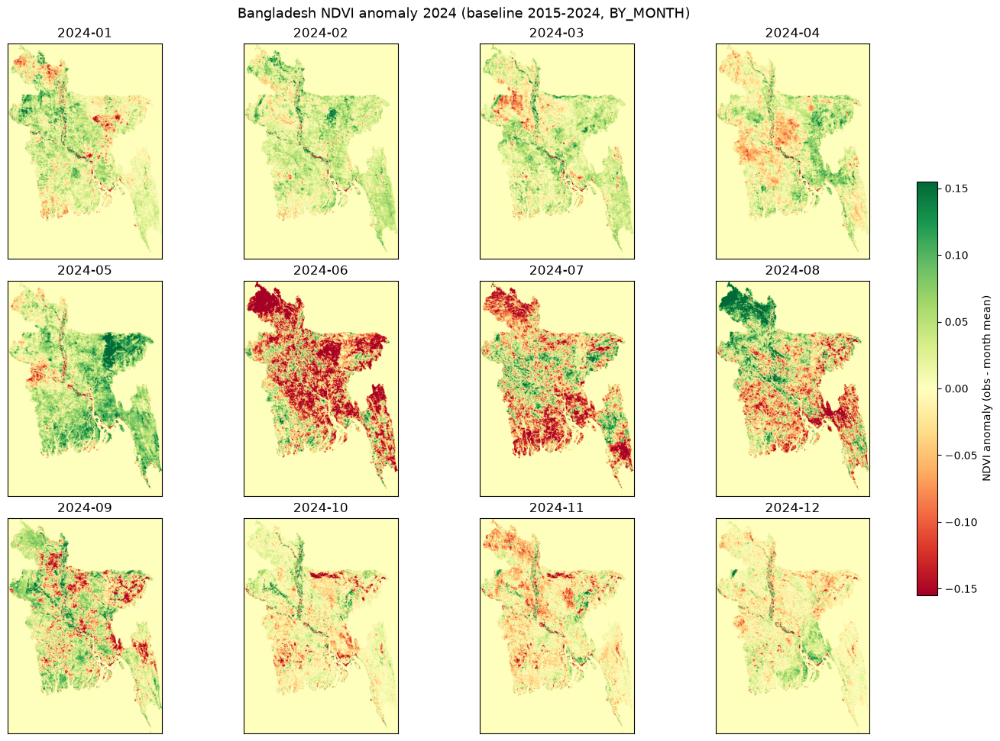
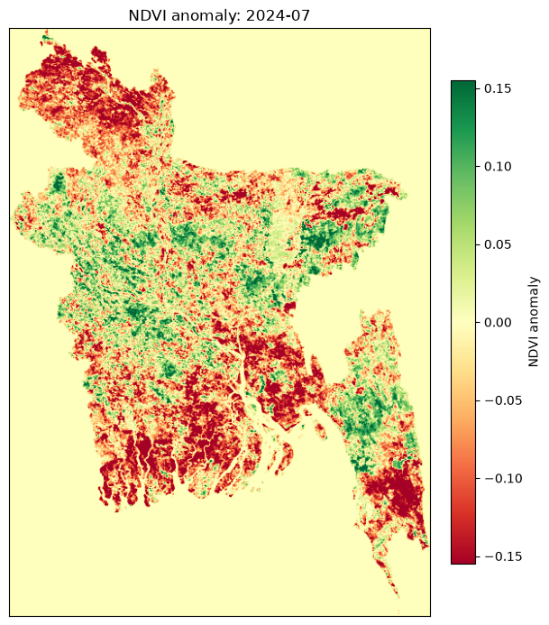

This notebook continues from 03_03_01_multidimensional_data_mangement.ipynb and focuses on multidimensional raster analysis with geolattice.spatial_analysis.
Overview
This section provides a detailed overview of Multidimensional Data Analysis, covering the core methodologies and applications for extracting meaningful insights from raster datasets with multiple dimensions such as time or depth. By leveraging analytical techniques available in geolattice.spatial_analysis, we demonstrate practical workflows for temporal aggregation, anomaly detection, and the identification of key statistics across spatial-temporal raster datasets.
Core concepts
Aggregate Multidimensional Data
Temporal aggregation reduces a dense time series into summary rasters that are easier to map and compare. We demonstrate two common workflows for Bangladesh:
Dataset
Source
Aggregation
Output
Groundwater watertable (2020)
Data/00_shared/raster_data/Bangladesh/watertable
Seasonal mean (Premonsoon / Monsoon / Winter)
3 seasonal GeoTIFFs + NetCDF
MODIS NDVI (2024)
Data/00_shared/raster_data/Bangladesh/ndvi
Monthly mean (12 months)
12 monthly GeoTIFFs + NetCDF
Season boundaries for groundwater follow the Bangladesh hydrologic calendar used in R_Code/03_seasonal_trend.ipynb:
Premonsoon: 15 Mar to 15 Jul
Monsoon: 16 Jul to 15 Nov
Winter: 16 Nov to 14 Mar
NDVI files are 16-day composites (ndvi_YYYY_DOY.tif); monthly means are computed with aggregate_multidimensional_raster(..., interval_keyword="MONTHLY").
Multidimensional Anomaly
Anomalies compare each observation to a climatological baseline (ArcGIS-style Generate Multidimensional Anomaly via generate_multidimensional_anomaly).
Dataset
Source
Anomaly
Output
MODIS NDVI (2015-2024)
Data/00_shared/raster_data/Bangladesh/ndvi
Monthly difference / % difference / z-score vs month-of-year mean
2024 anomaly maps + NetCDF
Find Argument Statistics
find_argument_statistics finds the dimension value where a statistic occurs (ArcGIS Find Argument Statistics): for example the date of maximum NDVI, or how long NDVI stays above a greenness threshold.
Locate the repository root, import the analysis helpers, and create the output folder.
Installation. This notebook needs installation option 2 (core plus spatial analysis): pip install "geolattice[analysis]". See “Installation options” in the GeoLattice README.
Code
# Display matplotlib figures inline in this Jupyter notebook.%matplotlib inlineimport os # environment variables for GDAL/PROJ and process pathsimport re # regular expressions for filename / DOY parsingimport ctypes # preload libgdal into this process when neededimport warnings # silence noisy third-party warnings in the tutorialfrom pathlib import Path # filesystem paths for locating sample datafrom datetime import datetime, timedelta # parse and construct timestamps# Jupyter kernels do not load ~/.bashrc: preload user-local GDAL so osgeo works._GDAL_PREFIX = Path.home() /".local"/"share"/"gdal-prefix"# local GDAL install prefix_GDAL_LIBDIR = _GDAL_PREFIX /"lib"# directory containing libgdal_GDAL_SO = _GDAL_LIBDIR /"libgdal.so.39"# shared library file to preloadif _GDAL_SO.is_file(): # only adjust the environment when the local build exists os.environ["PATH"] =f"{_GDAL_PREFIX /'bin'}{os.pathsep}{os.environ.get('PATH', '')}"# prepend GDAL bin _ld = os.environ.get("LD_LIBRARY_PATH", "") # existing LD_LIBRARY_PATH value os.environ["LD_LIBRARY_PATH"] =f"{_GDAL_LIBDIR}{os.pathsep}{_ld}"if _ld elsestr(_GDAL_LIBDIR) # prepend lib dir _gdal_data = _GDAL_PREFIX /"share"/"gdal"# GDAL_DATA support files _proj_data = _GDAL_PREFIX /"share"/"proj"# PROJ datum / grid filesif _gdal_data.is_dir(): os.environ.setdefault("GDAL_DATA", str(_gdal_data)) # set GDAL_DATA if not already definedif _proj_data.is_dir(): os.environ.setdefault("PROJ_DATA", str(_proj_data)) # PROJ 9+ data directory os.environ.setdefault("PROJ_LIB", str(_proj_data)) # legacy PROJ data directory ctypes.CDLL(str(_GDAL_SO), mode=ctypes.RTLD_GLOBAL) # load libgdal into this processimport numpy as np # array ops for rasters, masks, and numeric summariesimport pandas as pd # tabular data frames and datetime indexesimport xarray as xr # labeled multidimensional arrays (NetCDF / Zarr)import matplotlib.pyplot as plt # figure and axes creation for maps and chartsimport rasterio # GeoTIFF I/O and raster metadatawarnings.filterwarnings("ignore") # keep the tutorial output readable# The installed package lives in src/; the repository root is its parent.import geolatticeROOT = Path(geolattice.__file__).resolve().parents[1]ifnot (ROOT /"Data").is_dir():raiseFileNotFoundError("Could not find the GeoLattice repository root.")from geolattice.spatial_analysis import ( # import helpers from geolattice.spatial_analysis MultidimensionalRaster, # cube wrapper around an xarray Dataset aggregate_multidimensional_raster, # temporally aggregate a cube find_argument_statistics, # argmax/argmin along the time dimension generate_multidimensional_anomaly, # anomaly from a climatology baseline raster_to_netcdf, # GeoTIFF series to NetCDF)WT_DIR = ROOT /"Data"/"00_shared"/"raster_data"/"Bangladesh"/"watertable"# path or tutorial parameterNDVI_DIR = ROOT /"Data"/"00_shared"/"raster_data"/"Bangladesh"/"ndvi"# path or tutorial parameterOUT_DIR = ROOT /"Data"/"03_spatial_analysis"/"NetCDF"/"output"/"multidimensional_analysis"# path or tutorial parameterOUT_DIR.mkdir(parents=True, exist_ok=True) # create the output folder if neededWT_SEASON_DIR = OUT_DIR /"watertable_2020_seasonal_mean"# path or tutorial parameterNDVI_MONTH_DIR = OUT_DIR /"ndvi_2024_monthly_mean"# path or tutorial parameterNDVI_ANOM_DIR = OUT_DIR /"ndvi_anomaly"# path or tutorial parameterNDVI_ARGSTAT_DIR = OUT_DIR /"ndvi_argument_statistics"# path or tutorial parameterWT_SEASON_DIR.mkdir(parents=True, exist_ok=True) # create the output folder if neededNDVI_MONTH_DIR.mkdir(parents=True, exist_ok=True) # create the output folder if neededNDVI_ANOM_DIR.mkdir(parents=True, exist_ok=True) # create the output folder if neededNDVI_ARGSTAT_DIR.mkdir(parents=True, exist_ok=True) # create the output folder if neededprint(f"Repo: {ROOT}") # confirm paths / environmentprint(f"WT dir: {WT_DIR} exists={WT_DIR.is_dir()}") # confirm paths / environmentprint(f"NDVI dir: {NDVI_DIR} exists={NDVI_DIR.is_dir()}") # confirm paths / environmentprint(f"Output: {OUT_DIR}") # confirm paths / environment
Both watertable and NDVI use MODIS-style day-of-year naming (*_YYYY_DOY.tif). NDVI DOY values are sometimes unpadded (ndvi_2024_1.tif), so the parser accepts 1-3 digit DOY.
Code
def parse_doy_filename(path: Path, prefix: str) -> datetime:"""Parse ``{prefix}_YYYY_DOY.tif`` -> datetime at that day-of-year.""" m = re.match(rf"{re.escape(prefix)}_(\d{{4}})_(\d{{1,3}})$", path.stem, re.IGNORECASE) # mifnot m:raiseValueError(f"Unexpected filename: {path.name} (expected {prefix}_YYYY_DOY.tif)") # fail with a clear error message year, doy =int(m.group(1)), int(m.group(2)) # yearifnot1<= doy <=366:raiseValueError(f"Invalid DOY {doy} in {path.name}") # fail with a clear error messagereturn datetime(year, 1, 1) + timedelta(days=doy -1) # return the computed resultdef stack_geotiffs_to_mdr( paths, times, variable_name: str, scale: float=1.0# paths) -> MultidimensionalRaster:"""Build a MultidimensionalRaster from a GeoTIFF time series (rasterio).""" arrays = [] # arrays xs = ys =None# xsfor path in paths: # iterate over itemswith rasterio.open(path) as src: # open a context-managed resource data = src.read(1).astype("float32") # cast to the target dtype nodata = src.nodata # nodataif nodata isnotNone: data = np.where(data == nodata, np.nan, data) # compute data# Mask extreme GDAL nodata sentinels data = np.where(np.abs(data) >1e30, np.nan, data) # compute dataif scale !=1.0: data = data * np.float32(scale) # compute data transform = src.transform # transform height, width = data.shape # height xs = transform.c + (np.arange(width) +0.5) * transform.a # compute xs ys = transform.f + (np.arange(height) +0.5) * transform.e # compute ys arrays.append(data) da = xr.DataArray( # da np.stack(arrays, axis=0), # set np.stack(arrays dims=("time", "y", "x"), # dims coords={ # coords"time": np.array(times, dtype="datetime64[ns]"), # set "time": np.array(times"y": ys,"x": xs, }, name=variable_name, # name )return MultidimensionalRaster(da) # return the computed resultdef write_geotiff_from_array(array: np.ndarray, out_path: Path, profile_src: Path, nodata=np.nan):"""Write a 2-D array using georeferencing from a reference GeoTIFF."""with rasterio.open(profile_src) as src: # open a context-managed resource profile = src.profile.copy() # profile profile.update(dtype="float32", count=1, nodata=nodata, compress="LZW") # set profile.update(dtype out_path.parent.mkdir(parents=True, exist_ok=True) # set out_path.parent.mkdir(parentswith rasterio.open(out_path, "w", **profile) as dst: # open a context-managed resource dst.write(np.asarray(array, dtype=np.float32), 1) # compute dst.write(np.asarray(arraydef get_bangladesh_season(dt: datetime) ->str|None:"""Assign Premonsoon / Monsoon / Winter (mid-Mar / mid-Jul / mid-Nov boundaries).""" m, d = dt.month, dt.day # mif (m ==3and d >=15) or (4<= m <=6) or (m ==7and d <=15):return"Premonsoon"# return the computed resultif (m ==7and d >=16) or (8<= m <=10) or (m ==11and d <=15):return"Monsoon"# return the computed resultif (m ==11and d >=16) or (m ==12) or (1<= m <=2) or (m ==3and d <=14):return"Winter"# return the computed resultreturnNone# return the computed resultprint("Helpers ready.") # status / summary print
Helpers ready.
Groundwater 2020: Seasonal mean
Load all 2020watertable_YYYY_DOY.tif slices (23 x 16-day composites), group by Bangladesh season, and compute the pixel-wise mean for each season.
Code
YEAR_WT =2020# tutorial parameterwt_paths =sorted( # sorted GeoTIFF paths for the year WT_DIR.glob(f"watertable_{YEAR_WT}_*.tif"), key=lambda p: parse_doy_filename(p, "watertable"), # key)ifnot wt_paths:raiseFileNotFoundError(f"No watertable_{YEAR_WT}_*.tif under {WT_DIR}") # fail with a clear error messagewt_times = [parse_doy_filename(p, "watertable") for p in wt_paths] # timestamps parsed from filenameswt_mdr = stack_geotiffs_to_mdr(wt_paths, wt_times, variable_name="watertable") # build multidimensional layerwt_da = wt_mdr.dataset["watertable"] # wt_daprint(f"Loaded {len(wt_paths)} watertable slices for {YEAR_WT}") # status / summary printprint(f"Time span: {wt_times[0].date()} -> {wt_times[-1].date()}") # status / summary printprint(wt_mdr) # status / summary print# Group indices by seasonseason_order = ["Premonsoon", "Monsoon", "Winter"] # display order for Bangladesh seasonsseason_indices = {s: [] for s in season_order} # map season name -> slice indicesfor i, dt inenumerate(wt_times): # iterate over items s = get_bangladesh_season(dt) # sif s: season_indices[s].append(i)for s in season_order: # iterate over items dates_s = [wt_times[i].strftime("%Y-%m-%d") for i in season_indices[s]] # dates_sprint( # status / summary printf" {s:12s}: {len(season_indices[s]):2d} slices "f"{dates_s[0] if dates_s else'n/a'} … {dates_s[-1] if dates_s else'n/a'}" )
# Pixel-wise seasonal mean (skip NaN / nodata)seasonal_means = {} # seasonal_meansfor season in season_order: # iterate over items idx = season_indices[season] # idxifnot idx:print(f"⚠️ {season}: no slices: skipped") # status / summary printcontinue# skip this candidate seasonal_means[season] = wt_da.isel(time=idx).mean(dim="time", skipna=True) # select along coordinates or indices# Wrap as MultidimensionalRaster with a season coordinateseason_da = xr.concat( # season_da [seasonal_means[s].expand_dims(season=[s]) for s in season_order if s in seasonal_means], dim="season", # dim)season_da.name ="watertable"# set season_da.nameseason_mdr = MultidimensionalRaster(season_da) # season_mdrprint(season_mdr) # status / summary print# Export GeoTIFFs + NetCDFref_tif = wt_paths[0] # ref_tiffor season, arr in seasonal_means.items(): # iterate over items out_tif = WT_SEASON_DIR /f"watertable_{YEAR_WT}_mean_{season}.tif"# out_tif write_geotiff_from_array(arr.values, out_tif, ref_tif)print(f"Wrote {out_tif.name}") # status / summary printWT_SEASON_NC = OUT_DIR /f"watertable_{YEAR_WT}_seasonal_mean.nc"# WT_SEASON_NCraster_to_netcdf( season_mdr, WT_SEASON_NC, overwrite=True, # overwrite encoding={"watertable": {"zlib": True, "complevel": 4, "dtype": "float32"}}, # encoding)print(f"Wrote {WT_SEASON_NC}") # status / summary print
MultidimensionalRaster(variables=[watertable], dims={season: 3, y: 669, x: 479})
Wrote watertable_2020_mean_Premonsoon.tif
Wrote watertable_2020_mean_Monsoon.tif
Wrote watertable_2020_mean_Winter.tif
Wrote /home/zia207/Github/GeoLattice/Data/03_spatial_analysis/NetCDF/output/multidimensional_analysis/watertable_2020_seasonal_mean.nc
Code
# Map the three seasonal meansfig, axes = plt.subplots(1, 3, figsize=(14, 5), constrained_layout=True) # create the figure and axesvmin =float(np.nanpercentile(season_da.values, 2)) # compute vminvmax =float(np.nanpercentile(season_da.values, 98)) # compute vmaxfor ax, season inzip(axes, season_order): # iterate over items data = seasonal_means[season].values # data im = ax.imshow(data, cmap="viridis_r", vmin=vmin, vmax=vmax, origin="upper") # show a 2-D array as an image ax.set_title(f"{season}\n(n={len(season_indices[season])} slices)") # panel title ax.set_xticks([]) # configure tick labels ax.set_yticks([]) # configure tick labelsfig.colorbar(im, ax=axes.ravel().tolist(), shrink=0.85, label="Watertable (m)") # add a colorbarfig.suptitle(f"Bangladesh groundwater: {YEAR_WT} seasonal mean", fontsize=13)plt.show() # render the figureprint("Domain-wide seasonal means (m):") # status / summary printfor s in season_order: # iterate over itemsif s in seasonal_means:print(f" {s:12s}: {float(np.nanmean(seasonal_means[s].values)):7.3f}") # status / summary print
Optional: calendar seasons via aggregate_multidimensional_raster
The library also supports standard meteorological seasons (DJF, MAM, JJA, SON) and MONTHLY / YEARLY keywords: useful when you want ArcGIS-style aggregation without custom season boundaries.
Code
# Example: meteorological MAM mean for the same 2020 cubemam = aggregate_multidimensional_raster( # mam wt_mdr, variable="watertable", # variable dimension="time", # dimension aggregation_method="MEAN", # aggregation_method aggregation_definition="INTERVAL_KEYWORD", # aggregation_definition interval_keyword="MAM", # interval_keyword)print("MAM (Mar-May) aggregate:", mam) # status / summary print# Example: monthly means for 2020 watertablewt_monthly = aggregate_multidimensional_raster( # wt_monthly wt_mdr, variable="watertable", # variable dimension="time", # dimension aggregation_method="MEAN", # aggregation_method aggregation_definition="INTERVAL_KEYWORD", # aggregation_definition interval_keyword="MONTHLY", # interval_keyword)print("Monthly aggregate:", wt_monthly) # status / summary printprint("Monthly time stamps:", [str(t)[:10] for t in wt_monthly.dataset.time.values]) # status / summary print# Plot monthly meansfig, ax = plt.subplots(figsize=(5.5, 7)) # create the figure and axeswt_monthly.dataset.watertable.isel(time=0).plot(ax=ax, cmap="viridis_r") # draw the map or chartax.set_title("Monthly mean watertable") # panel titleax.set_xlabel("Longitude") # x-axis label
Stack all 2024 16-day NDVI GeoTIFFs, scale from MODIS integer units (DN x 1e-4), then aggregate to 12 monthly means with aggregate_multidimensional_raster.
Code
YEAR_NDVI =2024# tutorial parameterNDVI_SCALE =1e-4# MODIS NDVI stored as int16 x 10000ndvi_paths =sorted( # ndvi_paths NDVI_DIR.glob(f"ndvi_{YEAR_NDVI}_*.tif"), key=lambda p: parse_doy_filename(p, "ndvi"), # key)ifnot ndvi_paths:raiseFileNotFoundError(f"No ndvi_{YEAR_NDVI}_*.tif under {NDVI_DIR}") # fail with a clear error messagendvi_times = [parse_doy_filename(p, "ndvi") for p in ndvi_paths] # ndvi_timesndvi_mdr = stack_geotiffs_to_mdr( # ndvi_mdr ndvi_paths, ndvi_times, variable_name="ndvi", scale=NDVI_SCALE # ndvi_paths)# Valid NDVI typically in [-0.2, 1]; mask remaining fill / out-of-rangendvi_da = ndvi_mdr.dataset["ndvi"] # ndvi_dandvi_da = ndvi_da.where((ndvi_da >=-0.2) & (ndvi_da <=1.0)) # ndvi_dandvi_mdr = MultidimensionalRaster(ndvi_da.to_dataset(name="ndvi")) # ndvi_mdrprint(f"Loaded {len(ndvi_paths)} NDVI 16-day slices for {YEAR_NDVI}") # status / summary printprint(f"Time span: {ndvi_times[0].date()} -> {ndvi_times[-1].date()}") # status / summary printprint(ndvi_mdr) # status / summary printprint("Sample dates:", [t.strftime("%Y-%m-%d") for t in ndvi_times[:4]], "…") # status / summary print
# Aggregate 16-day NDVI -> monthly mean (12 months)ndvi_monthly = aggregate_multidimensional_raster( # ndvi_monthly ndvi_mdr, variable="ndvi", # variable dimension="time", # dimension aggregation_method="MEAN", # aggregation_method aggregation_definition="INTERVAL_KEYWORD", # aggregation_definition interval_keyword="MONTHLY", # interval_keyword)print(ndvi_monthly) # status / summary printmonth_da = ndvi_monthly.dataset["ndvi"] # month_damonth_times = [np.datetime_as_string(t, unit="M") for t in month_da.time.values] # month_timesprint(f"Monthly layers: {len(month_da.time)} -> {month_times}") # status / summary print# Export each month as GeoTIFF + combined NetCDFref_ndvi = ndvi_paths[0] # ref_ndvifor i, t inenumerate(month_da.time.values): # iterate over items label = np.datetime_as_string(t, unit="M").replace("-", "") # YYYYMM out_tif = NDVI_MONTH_DIR /f"ndvi_{YEAR_NDVI}_mean_{label}.tif"# out_tif write_geotiff_from_array(month_da.isel(time=i).values, out_tif, ref_ndvi)print(f"Wrote {out_tif.name}") # status / summary printNDVI_MONTH_NC = OUT_DIR /f"ndvi_{YEAR_NDVI}_monthly_mean.nc"# NDVI_MONTH_NCraster_to_netcdf( ndvi_monthly, NDVI_MONTH_NC, overwrite=True, # overwrite encoding={"ndvi": {"zlib": True, "complevel": 4, "dtype": "float32"}}, # encoding)print(f"Wrote {NDVI_MONTH_NC}") # status / summary print
MultidimensionalRaster(variables=[ndvi], dims={y: 670, x: 480, time: 12})
Monthly layers: 12 -> [np.str_('2024-01'), np.str_('2024-02'), np.str_('2024-03'), np.str_('2024-04'), np.str_('2024-05'), np.str_('2024-06'), np.str_('2024-07'), np.str_('2024-08'), np.str_('2024-09'), np.str_('2024-10'), np.str_('2024-11'), np.str_('2024-12')]
Wrote ndvi_2024_mean_202401.tif
Wrote ndvi_2024_mean_202402.tif
Wrote ndvi_2024_mean_202403.tif
Wrote ndvi_2024_mean_202404.tif
Wrote ndvi_2024_mean_202405.tif
Wrote ndvi_2024_mean_202406.tif
Wrote ndvi_2024_mean_202407.tif
Wrote ndvi_2024_mean_202408.tif
Wrote ndvi_2024_mean_202409.tif
Wrote ndvi_2024_mean_202410.tif
Wrote ndvi_2024_mean_202411.tif
Wrote ndvi_2024_mean_202412.tif
Wrote /home/zia207/Github/GeoLattice/Data/03_spatial_analysis/NetCDF/output/multidimensional_analysis/ndvi_2024_monthly_mean.nc
Code
# 12-panel monthly NDVI map, with background/NA as no color (completely transparent)n_months =int(month_da.sizes["time"]) # n_monthsncols =4# ncolsnrows =int(np.ceil(n_months / ncols)) # compute nrowsfig, axes = plt.subplots(nrows, ncols, figsize=(14, 3.2* nrows), constrained_layout=True) # create the figure and axesaxes = np.atleast_1d(axes).ravel() # compute axesvmin, vmax =0.1, 0.85# vmin# Get a colormap, make a copy, and set bad (NaN) values to fully transparentcmap = plt.get_cmap("viridis").copy() # cmapcmap.set_bad((0, 0, 0, 0))for i, ax inenumerate(axes): # iterate over itemsif i < n_months: t = month_da.time.values[i] # t label = np.datetime_as_string(t, unit="M") # compute label arr = np.ma.masked_invalid(month_da.isel(time=i).values) # select along coordinates or indices im = ax.imshow( # im arr, cmap=cmap, # cmap vmin=vmin, # vmin vmax=vmax, # vmax origin="upper"# origin ) ax.set_title(label) # panel title ax.set_xticks([]) # configure tick labels ax.set_yticks([]) # configure tick labelselse: ax.axis("off")fig.colorbar(im, ax=axes.tolist(), shrink=0.6, label="NDVI") # add a colorbarfig.suptitle(f"Bangladesh NDVI: {YEAR_NDVI} monthly mean (from 16-day composites)", fontsize=13, # fontsize)plt.show() # render the figureprint("Domain-wide monthly mean NDVI:") # status / summary printfor i, t inenumerate(month_da.time.values): # iterate over items v =float(np.nanmean(month_da.isel(time=i).values)) # select along coordinates or indicesprint(f" {np.datetime_as_string(t, unit='M')}: {v:6.3f}") # status / summary print
In this section, we will compute vegetation anomalies using NDVI data, specifically measuring how much the NDVI for each month in a target year (e.g., 2024) deviates from the “normal” value for that same month, based on a historical baseline.
This is accomplished by comparing recent NDVI observations to a month-of-year climatology: that is, long-term average NDVI values for each calendar month, calculated from several years of past data.
To do this, we use the function generate_multidimensional_anomaly (ArcGIS Generate Multidimensional Anomaly tool). This tool allows us to: - Stack multiple years of NDVI data to build up a climatology for each month (e.g., average all Januarys, all Februarys, etc., across many years) - Calculate, for each month in a given year, how different the observed NDVI is from its long-term monthly average - Express this anomaly as either the absolute difference, percent difference, or standardized z-score
This workflow enables us to spot unusually green or brown months and detect significant changes in vegetation conditions.
Workflow 1. Stack 16-day NDVI for a baseline window (2015-2024) 2. Aggregate to monthly means 3. Compute anomalies with calculation_interval="BY_MONTH": - DIFFERENCE_FROM_MEAN: NDVI units above/below the month mean - PERCENT_DIFFERENCE_FROM_MEAN: relative (%) departure - Z_SCORE: standardized departure 4. Map and export 2024 monthly anomalies
Positive values = greener / denser vegetation than the month climatology; negative = browner.
Code
# Build multi-year NDVI cube (16-day -> monthly) for climatology + anomalyNDVI_SCALE =1e-4# tutorial parameterANOM_YEARS =range(2015, 2025) # 2015-2024 baseline windowTARGET_ANOM_YEAR =2024# TARGET_ANOM_YEARndvi_paths_clim = [] # ndvi_paths_climfor year in ANOM_YEARS: # iterate over items ndvi_paths_clim.extend(NDVI_DIR.glob(f"ndvi_{year}_*.tif"))ndvi_paths_clim =sorted(ndvi_paths_clim, key=lambda p: parse_doy_filename(p, "ndvi")) # ndvi_paths_climifnot ndvi_paths_clim:raiseFileNotFoundError(f"No NDVI GeoTIFFs for {min(ANOM_YEARS)}-{max(ANOM_YEARS)} under {NDVI_DIR}") # fail with a clear error messagendvi_times_clim = [parse_doy_filename(p, "ndvi") for p in ndvi_paths_clim] # ndvi_times_climprint( # status / summary printf"Loading {len(ndvi_paths_clim)} NDVI 16-day slices "f"({ndvi_times_clim[0].date()} -> {ndvi_times_clim[-1].date()})…")ndvi_clim_mdr = stack_geotiffs_to_mdr( # ndvi_clim_mdr ndvi_paths_clim, ndvi_times_clim, variable_name="ndvi", scale=NDVI_SCALE # ndvi_paths_clim)ndvi_clim_da = ndvi_clim_mdr.dataset["ndvi"] # ndvi_clim_dandvi_clim_da = ndvi_clim_da.where((ndvi_clim_da >=-0.2) & (ndvi_clim_da <=1.0)) # ndvi_clim_dandvi_clim_mdr = MultidimensionalRaster(ndvi_clim_da.to_dataset(name="ndvi")) # ndvi_clim_mdr# Aggregate 16-day -> monthly means (required for BY_MONTH climatology)ndvi_monthly_clim = aggregate_multidimensional_raster( # ndvi_monthly_clim ndvi_clim_mdr, variable="ndvi", # variable dimension="time", # dimension aggregation_method="MEAN", # aggregation_method aggregation_definition="INTERVAL_KEYWORD", # aggregation_definition interval_keyword="MONTHLY", # interval_keyword)print(ndvi_monthly_clim) # status / summary printprint( # status / summary print"Monthly time:",str(ndvi_monthly_clim.dataset.time.values[0])[:7],"->",str(ndvi_monthly_clim.dataset.time.values[-1])[:7],f"(n={ndvi_monthly_clim.dataset.sizes['time']})", # set f"(n)
2024 difference anomaly months: 12
[np.str_('2024-01'), np.str_('2024-02'), np.str_('2024-03'), np.str_('2024-04'), np.str_('2024-05'), np.str_('2024-06'), np.str_('2024-07'), np.str_('2024-08'), np.str_('2024-09'), np.str_('2024-10'), np.str_('2024-11'), np.str_('2024-12')]
Wrote ndvi_2024_anom_diff_202401.tif
Wrote ndvi_2024_anom_diff_202402.tif
Wrote ndvi_2024_anom_diff_202403.tif
Wrote ndvi_2024_anom_diff_202404.tif
Wrote ndvi_2024_anom_diff_202405.tif
Wrote ndvi_2024_anom_diff_202406.tif
Wrote ndvi_2024_anom_diff_202407.tif
Wrote ndvi_2024_anom_diff_202408.tif
Wrote ndvi_2024_anom_diff_202409.tif
Wrote ndvi_2024_anom_diff_202410.tif
Wrote ndvi_2024_anom_diff_202411.tif
Wrote ndvi_2024_anom_diff_202412.tif
Wrote ndvi_2015_2024_anomaly_diff_by_month.nc
Wrote ndvi_2015_2024_anomaly_zscore_by_month.nc
Wrote ndvi_2024_anomaly_diff_by_month.nc
Code
# Map 2024 monthly NDVI anomalies (difference from month-of-year mean)n_months =int(anom2024_diff.sizes["time"]) # n_monthsncols, nrows =4, int(np.ceil(n_months /4)) # compute ncolsfig, axes = plt.subplots(nrows, ncols, figsize=(14, 3.2* nrows), constrained_layout=True) # create the figure and axesaxes = np.atleast_1d(axes).ravel() # compute axes# Symmetric color scale around 0lim =float(np.nanpercentile(np.abs(anom2024_diff.values), 98)) # compute limlim =max(lim, 0.05) # limfor i inrange(n_months): # iterate over items ax = axes[i] # ax label = np.datetime_as_string(anom2024_diff.time.values[i], unit="M") # compute label data = anom2024_diff.isel(time=i).values # select along coordinates or indices im = ax.imshow(data, cmap="RdYlGn", vmin=-lim, vmax=lim, origin="upper") # show a 2-D array as an image ax.set_title(label) # panel title ax.set_xticks([]) # configure tick labels ax.set_yticks([]) # configure tick labelsfor j inrange(n_months, len(axes)): # iterate over items axes[j].axis("off")fig.colorbar(im, ax=axes.tolist(), shrink=0.6, label="NDVI anomaly (obs - month mean)") # add a colorbarfig.suptitle(f"Bangladesh NDVI anomaly {TARGET_ANOM_YEAR} "f"(baseline {min(ANOM_YEARS)}-{max(ANOM_YEARS)}, BY_MONTH)", fontsize=13, # fontsize)plt.show() # render the figureprint(f"Domain-wide {TARGET_ANOM_YEAR} monthly mean anomalies:") # status / summary printprint(f"{'Month':>8}{'ΔNDVI':>8}{'%diff':>8}{'z':>8}") # status / summary printfor i, t inenumerate(anom2024_diff.time.values): # iterate over items d =float(np.nanmean(anom2024_diff.isel(time=i).values)) # select along coordinates or indices p =float(np.nanmean(anom2024_pct.isel(time=i).values)) # select along coordinates or indices z =float(np.nanmean(anom2024_z.isel(time=i).values)) # select along coordinates or indicesprint(f"{np.datetime_as_string(t, unit='M'):>8}{d:8.3f}{p:8.1f}{z:8.2f}") # status / summary print

Domain-wide 2024 monthly mean anomalies:
Month ΔNDVI %diff z
2024-01 0.007 -inf 0.45
2024-02 0.012 -inf 0.73
2024-03 0.008 -inf 0.43
2024-04 0.004 inf 0.14
2024-05 0.022 232644.5 0.72
2024-06 -0.032 nan -0.69
2024-07 -0.014 nan -0.33
2024-08 -0.001 nan -0.06
2024-09 0.003 -inf 0.14
2024-10 -0.002 -inf -0.12
2024-11 -0.007 inf -0.37
2024-12 -0.000 nan -0.02
Code
# Peak green-up / browning months in 2024 (spatial mean of z-score)z_means = [ # z_means (np.datetime_as_string(t, unit="M"), float(np.nanmean(anom2024_z.isel(time=i).values))) # select a subset of the cubefor i, t inenumerate(anom2024_z.time.values)]z_means_sorted =sorted(z_means, key=lambda x: x[1], reverse=True) # z_means_sortedprint("Greener-than-usual months (highest mean z):") # status / summary printfor m, z in z_means_sorted[:3]: # iterate over itemsprint(f" {m}: z = {z:+.2f}") # status / summary printprint("Browner-than-usual months (lowest mean z):") # status / summary printfor m, z in z_means_sorted[-3:]: # iterate over itemsprint(f" {m}: z = {z:+.2f}") # status / summary print# Single-panel example: July anomaly (monsoon peak greenness)july = anom2024_diff.sel(time=anom2024_diff.time.dt.month ==7).isel(time=0) # select along coordinates or indicesfig, ax = plt.subplots(figsize=(6, 7), constrained_layout=True) # create the figure and axesim = ax.imshow(july.values, cmap="RdYlGn", vmin=-lim, vmax=lim, origin="upper") # show a 2-D array as an imageax.set_title(f"NDVI anomaly: {np.datetime_as_string(july.time.values, unit='M')}") # panel titleax.set_xticks([]) # configure tick labelsax.set_yticks([]) # configure tick labelsfig.colorbar(im, ax=ax, shrink=0.8, label="NDVI anomaly") # add a colorbarplt.show() # render the figure
Greener-than-usual months (highest mean z):
2024-02: z = +0.73
2024-05: z = +0.72
2024-01: z = +0.45
Browner-than-usual months (lowest mean z):
2024-07: z = -0.33
2024-11: z = -0.37
2024-06: z = -0.69

Find Argument Statistics (NDVI)
In spatiotemporal raster analysis, it is often useful to determine when a particular statistic (e.g., a maximum or minimum value) occurs for each pixel over time. This is achieved by identifying, for each spatial location, the time index (or timestamp) at which a specified statistic (such as the maximum NDVI) is reached, rather than just reporting the value itself.
In this section, we use the function find_argument_statistics, which performs the so-called argument statistics commonly referred to in ArcGIS as Find Argument Statistics, to extract, for each pixel, the time-dimension value (e.g., date or index) at which the desired condition is satisfied (e.g., maximum or minimum NDVI).
For example, by applying find_argument_statistics to a time series of NDVI images, we can create a new raster layer where each pixel encodes the time (such as day-of-year or date) of peak greenness (NDVI maximum), lowest greenness (NDVI minimum), or first threshold crossing.
This approach enables spatial mapping of ecological timing metrics, such as: - Date of maximum NDVI (peak greenness) - Date of minimum NDVI (senescence or disturbance) - Duration and timing of greenness thresholds (e.g., number of time slices above NDVI = 0.5) - First date when a pixel reaches a certain NDVI threshold
These argument statistics provide valuable insight into seasonal vegetation dynamics and can reveal spatial patterns in phenology or environmental events.
We use the 2024 16-day NDVI stack from Data/00_shared/raster_data/Bangladesh/ndvi:
statistics_type
Result per pixel
ARGUMENT_OF_MAXIMUM
Date of maximum NDVI (peak greenness)
ARGUMENT_OF_MINIMUM
Date of minimum NDVI
DURATION + min_value
Number of 16-day composites with NDVI ≥ threshold
ARGUMENT_OF_MIN_VALUE
First date when NDVI reaches the threshold
Datetime argument layers are also exported as day-of-year (DOY) GeoTIFFs for mapping.
Code
# NDVI 2024 cube for argument statistics (16-day composites)ARG_YEAR =2024# tutorial parameterNDVI_SCALE =1e-4# tutorial parameterNDVI_THRESHOLD =0.50# "green" vegetation threshold for DURATION / first-crossingarg_paths =sorted( # arg_paths NDVI_DIR.glob(f"ndvi_{ARG_YEAR}_*.tif"), key=lambda p: parse_doy_filename(p, "ndvi"), # key)ifnot arg_paths:raiseFileNotFoundError(f"No ndvi_{ARG_YEAR}_*.tif under {NDVI_DIR}") # fail with a clear error messagearg_times = [parse_doy_filename(p, "ndvi") for p in arg_paths] # arg_timesndvi_arg_mdr = stack_geotiffs_to_mdr( # ndvi_arg_mdr arg_paths, arg_times, variable_name="ndvi", scale=NDVI_SCALE # arg_paths)ndvi_arg_da = ndvi_arg_mdr.dataset["ndvi"] # ndvi_arg_dandvi_arg_da = ndvi_arg_da.where((ndvi_arg_da >=-0.2) & (ndvi_arg_da <=1.0)) # ndvi_arg_da# Mask persistent near-zero background (water / fill) so argument stats reflect vegetated landland_mask = ndvi_arg_da.max(dim="time", skipna=True) >=0.15# land_maskndvi_arg_da = ndvi_arg_da.where(land_mask) # ndvi_arg_dandvi_arg_mdr = MultidimensionalRaster(ndvi_arg_da.to_dataset(name="ndvi")) # ndvi_arg_mdrprint(f"Vegetated land pixels: {int(land_mask.sum())} / {land_mask.size}") # status / summary printprint(f"Loaded {len(arg_paths)} NDVI slices for {ARG_YEAR}") # status / summary printprint(f"Time span: {arg_times[0].date()} -> {arg_times[-1].date()}") # status / summary printprint(ndvi_arg_mdr) # status / summary print
Vegetated land pixels: 140860 / 321600
Loaded 23 NDVI slices for 2024
Time span: 2024-01-01 -> 2024-12-18
MultidimensionalRaster(variables=[ndvi], dims={time: 23, y: 670, x: 480})
# Convert datetime argument layers -> day-of-year for mapping / GeoTIFF exportdef datetime_layer_to_doy(da: xr.DataArray) -> np.ndarray:"""Datetime / ns-int argument array -> day-of-year float grid (NaN where missing).""" flat = np.asarray(da.values).ravel() # compute flat out = np.full(flat.shape, np.nan, dtype=np.float32) # compute outfor i, val inenumerate(flat): # iterate over itemstry: # attempt optional or version-sensitive call ts = pd.Timestamp(val) # compute tsif pd.isna(ts):continue# skip this candidate out[i] =float(ts.dayofyear) # set out[i]exceptException: # handle the failure pathcontinue# skip this candidatereturn out.reshape(da.shape) # return the computed resultdoy_max = datetime_layer_to_doy(arg_max.dataset["ndvi_arg_max"]) # doy_maxdoy_min = datetime_layer_to_doy(arg_min.dataset["ndvi_arg_min"]) # doy_mindoy_first = datetime_layer_to_doy(arg_first_green.dataset["ndvi_arg_threshold"]) # doy_firstduration = arg_duration.dataset["ndvi_duration"].values.astype(np.float32) # cast to the target dtype# Approximate days above threshold (each composite ~ 16 days)duration_days = duration *16.0# duration_daysprint( # status / summary print"DOY of max NDVI: median:",f"{np.nanmedian(doy_max):.0f}","| mean:",f"{np.nanmean(doy_max):.1f}",)print( # status / summary print"DOY of min NDVI: median:",f"{np.nanmedian(doy_min):.0f}","| mean:",f"{np.nanmean(doy_min):.1f}",)print( # status / summary printf"Duration NDVI≥{NDVI_THRESHOLD}: median composites:",f"{np.nanmedian(duration):.0f}",f"(~ {np.nanmedian(duration_days):.0f} days)",)print( # status / summary print"First DOY NDVI≥threshold: median:",f"{np.nanmedian(doy_first):.0f}",)
DOY of max NDVI: median: 1 | mean: 99.4
DOY of min NDVI: median: 1 | mean: 82.9
Duration NDVI≥0.5: median composites: 0 (~ 0 days)
First DOY NDVI≥threshold: median: 1
Code
# Export NetCDF + DOY / duration GeoTIFFsref_arg = arg_paths[0] # ref_arg# NetCDF: keep original argument outputsfor mdr_out, name in [ (arg_max, f"ndvi_{ARG_YEAR}_arg_max.nc"), (arg_min, f"ndvi_{ARG_YEAR}_arg_min.nc"), (arg_duration, f"ndvi_{ARG_YEAR}_duration_ge_{str(NDVI_THRESHOLD).replace('.', 'p')}.nc"), (arg_first_green, f"ndvi_{ARG_YEAR}_first_ge_{str(NDVI_THRESHOLD).replace('.', 'p')}.nc"),]: out_nc = NDVI_ARGSTAT_DIR / name # out_nc raster_to_netcdf(mdr_out, out_nc, overwrite=True) # set raster_to_netcdf(mdr_outprint(f"Wrote {out_nc.name}") # status / summary print# GeoTIFF (numeric DOY / duration)exports = { # exportsf"ndvi_{ARG_YEAR}_doy_of_max.tif": doy_max,f"ndvi_{ARG_YEAR}_doy_of_min.tif": doy_min,f"ndvi_{ARG_YEAR}_doy_first_ge_{str(NDVI_THRESHOLD).replace('.', 'p')}.tif": doy_first,f"ndvi_{ARG_YEAR}_duration_composites_ge_{str(NDVI_THRESHOLD).replace('.', 'p')}.tif": duration,f"ndvi_{ARG_YEAR}_duration_days_ge_{str(NDVI_THRESHOLD).replace('.', 'p')}.tif": duration_days,}for fname, arr in exports.items(): # iterate over items write_geotiff_from_array(arr, NDVI_ARGSTAT_DIR / fname, ref_arg)print(f"Wrote {fname}") # status / summary print
Wrote ndvi_2024_arg_max.nc
Wrote ndvi_2024_arg_min.nc
Wrote ndvi_2024_duration_ge_0p5.nc
Wrote ndvi_2024_first_ge_0p5.nc
Wrote ndvi_2024_doy_of_max.tif
Wrote ndvi_2024_doy_of_min.tif
Wrote ndvi_2024_doy_first_ge_0p5.tif
Wrote ndvi_2024_duration_composites_ge_0p5.tif
Wrote ndvi_2024_duration_days_ge_0p5.tif
Code
# Map argument statisticsfig, axes = plt.subplots(2, 2, figsize=(12, 10), constrained_layout=True) # create the figure and axes# Date of max NDVI (DOY)im0 = axes[0, 0].imshow(doy_max, cmap="twilight", vmin=1, vmax=366, origin="upper") # show a 2-D array as an imageaxes[0, 0].set_title(f"DOY of maximum NDVI ({ARG_YEAR})") # panel titlefig.colorbar(im0, ax=axes[0, 0], shrink=0.85, label="Day of year") # add a colorbar# Date of min NDVI (DOY)im1 = axes[0, 1].imshow(doy_min, cmap="twilight", vmin=1, vmax=366, origin="upper") # show a 2-D array as an imageaxes[0, 1].set_title(f"DOY of minimum NDVI ({ARG_YEAR})") # panel titlefig.colorbar(im1, ax=axes[0, 1], shrink=0.85, label="Day of year") # add a colorbar# Duration above thresholdim2 = axes[1, 0].imshow(duration, cmap="YlGn", vmin=0, vmax=np.nanpercentile(duration, 98), origin="upper") # show a 2-D array as an imageaxes[1, 0].set_title(f"Duration: NDVI ≥ {NDVI_THRESHOLD}\n(16-day composites)") # panel titlefig.colorbar(im2, ax=axes[1, 0], shrink=0.85, label="Composite count") # add a colorbar# First date reaching thresholdim3 = axes[1, 1].imshow(doy_first, cmap="viridis", vmin=1, vmax=366, origin="upper") # show a 2-D array as an imageaxes[1, 1].set_title(f"First DOY with NDVI ≥ {NDVI_THRESHOLD}") # panel titlefig.colorbar(im3, ax=axes[1, 1], shrink=0.85, label="Day of year") # add a colorbarfor ax in axes.ravel(): # iterate over items ax.set_xticks([]) # configure tick labels ax.set_yticks([]) # configure tick labelsfig.suptitle(f"Find Argument Statistics: Bangladesh NDVI {ARG_YEAR}", fontsize=13, # fontsize)plt.show() # render the figure
Takeaways - Seasonal aggregation for groundwater uses hydrologic seasons (Premonsoon / Monsoon / Winter). - Monthly aggregation for NDVI uses aggregate_multidimensional_raster with interval_keyword="MONTHLY". - Multidimensional anomalies use generate_multidimensional_anomaly with calculation_interval="BY_MONTH". - find_argument_statistics returns the date of max/min NDVI, duration above a threshold, or the first date a threshold is reached. - Workflows start from 16-day GeoTIFF stacks wrapped as MultidimensionalRaster cubes.